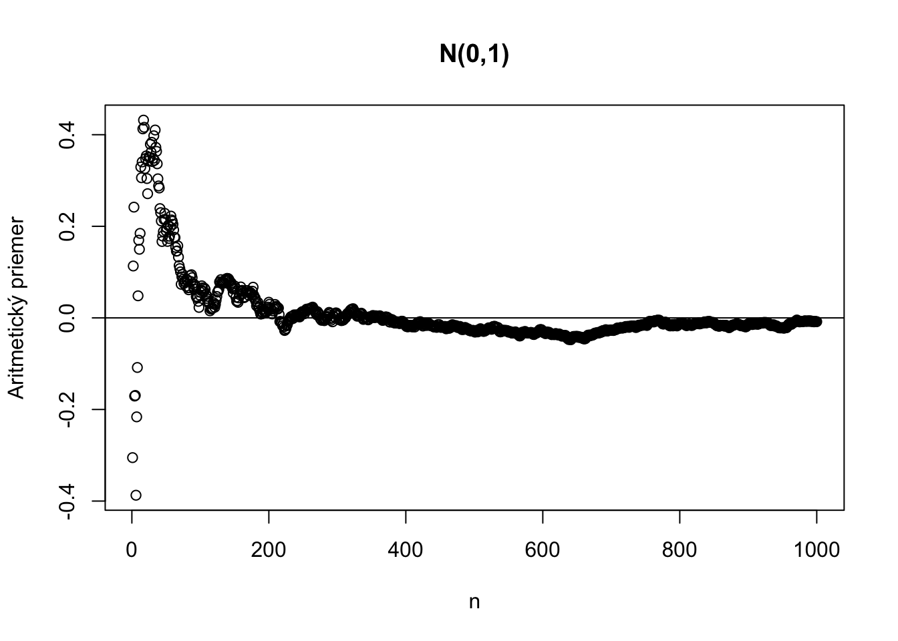
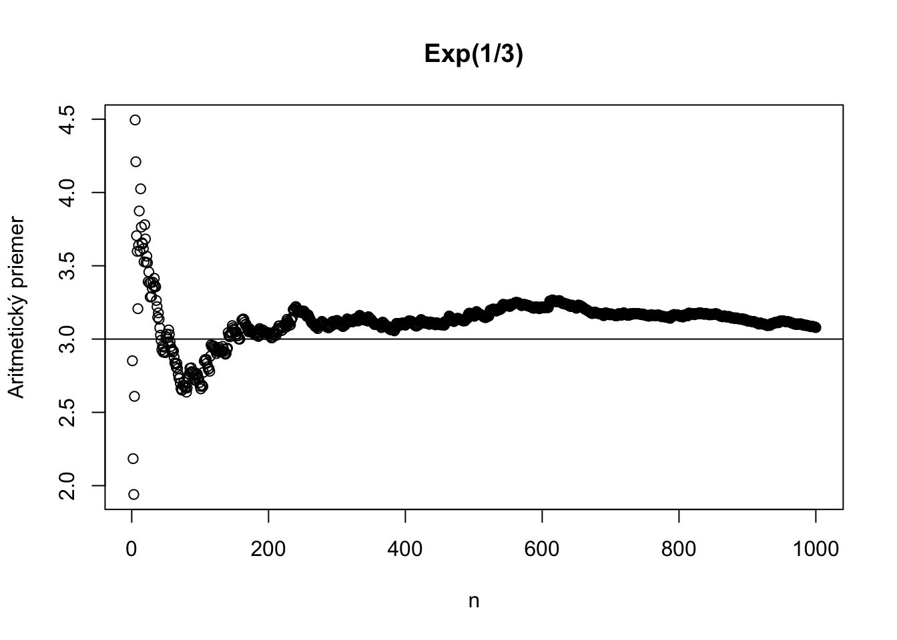
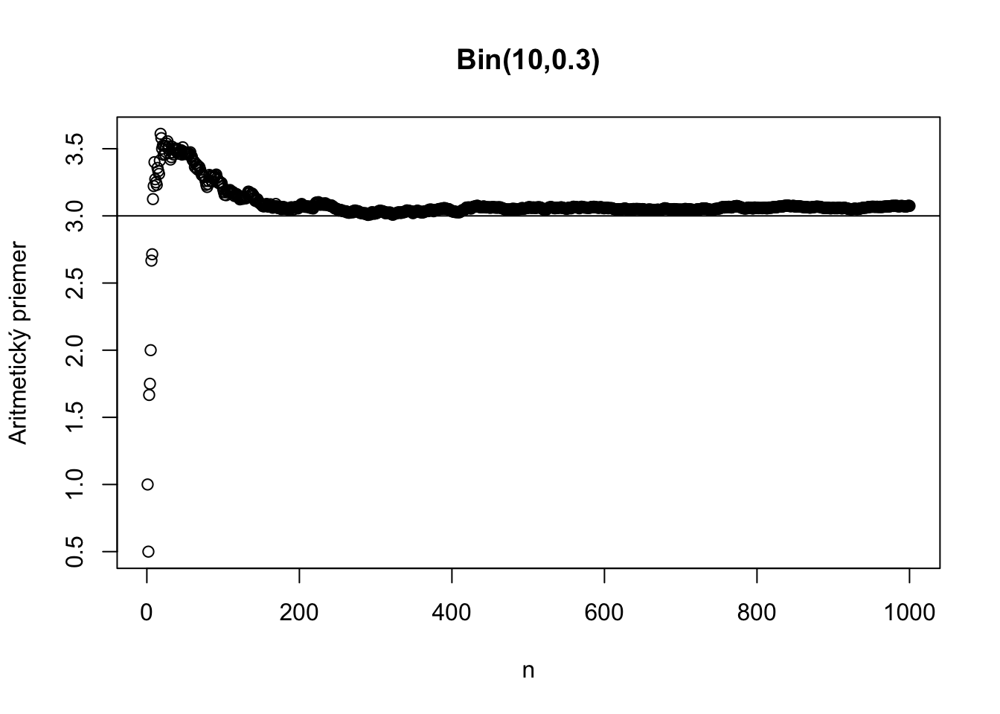
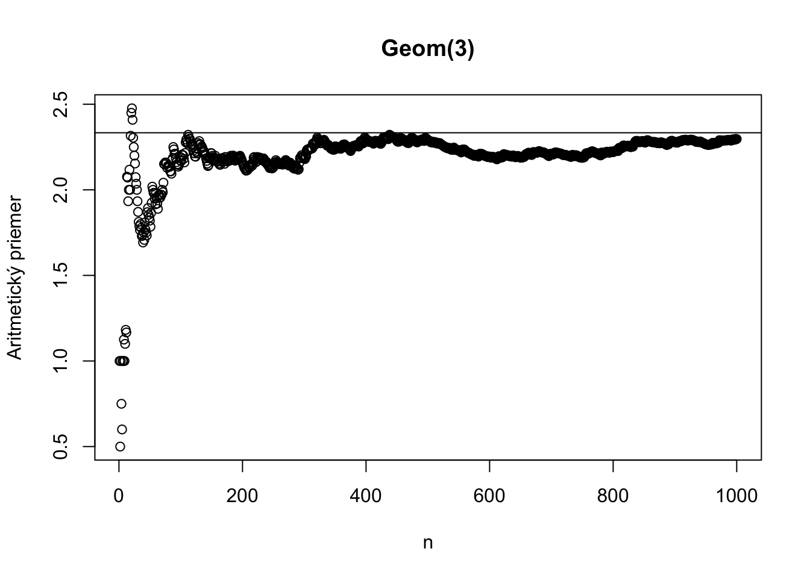
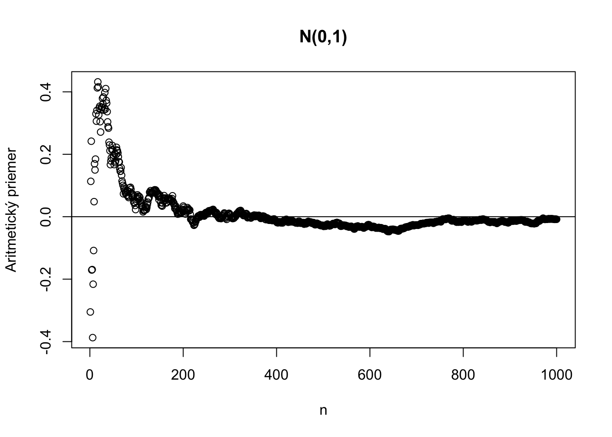
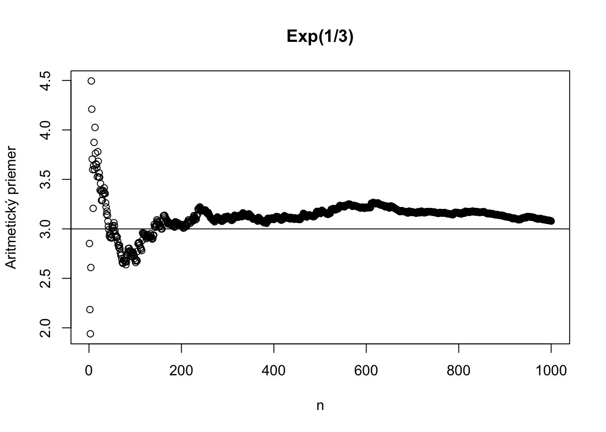
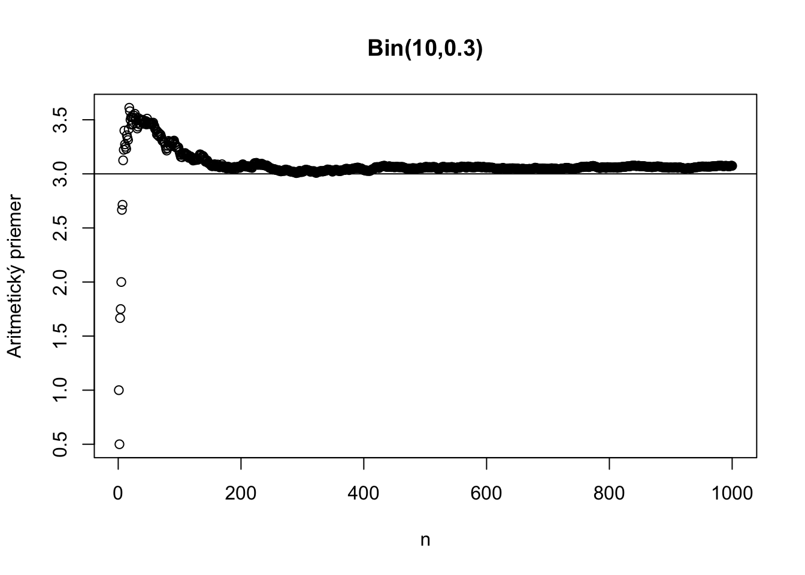
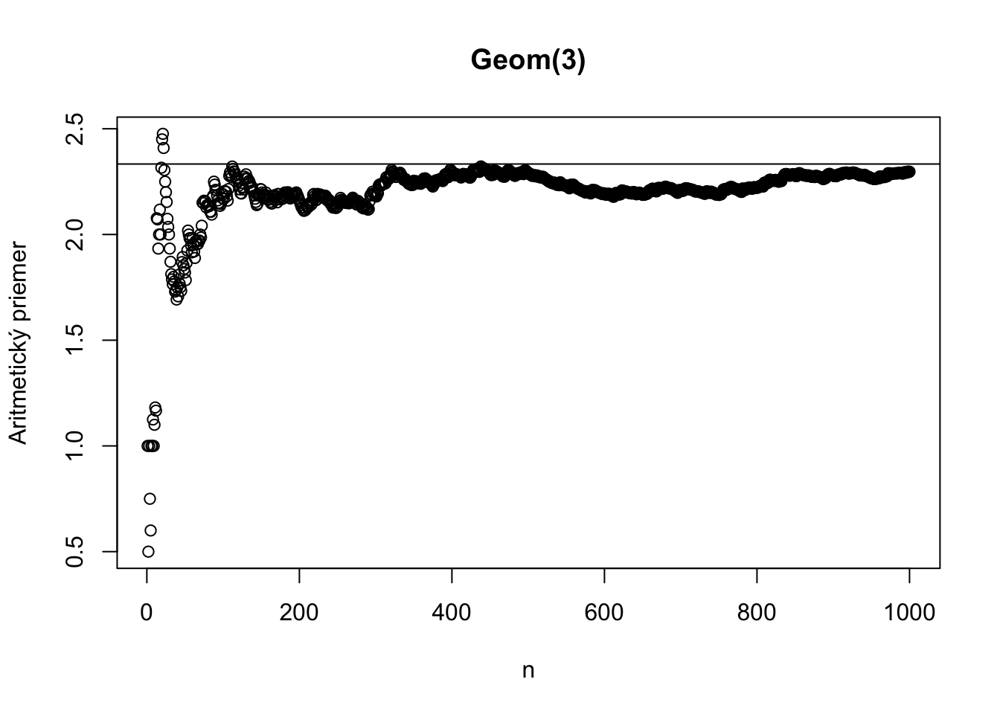
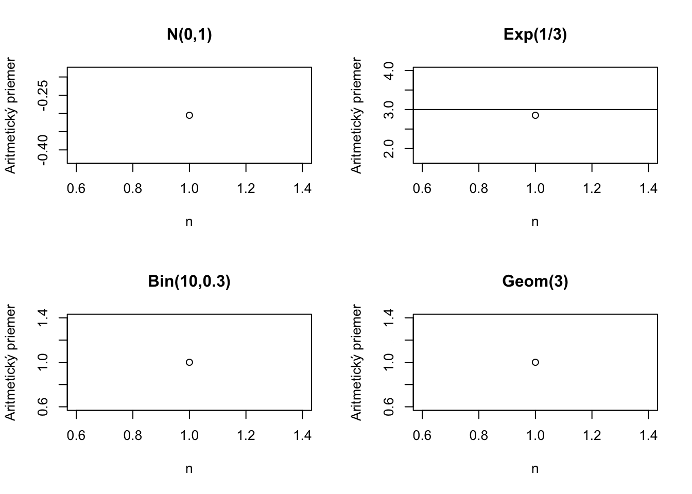
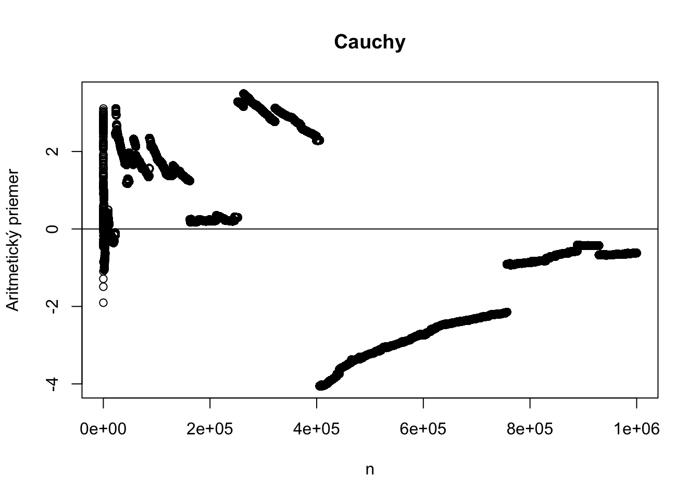

Zákon veľkých čisel je jedným z najdôležitejších výsledkov v pravdepodobnosti a štatistike. Hovorí o tom, že aritmetický priemer vypočítaný zo stále väčšieho a väčšíeho počtu nezávislých a rovnako rozdelených náhodných premenných sa blíži k skutočnej strednej hodnote.1 Zároveň je to aj výsledok, ktorý sme potichu používali len sme o tom nehovorili explicitne. Vždy, keď používame počítačovú simuláciu na ukázanie akýchsi vlastností náhodnej premennej, využívame fakt, že pri dostatočne veľkom množstve simulácií sú tieto odsimulované vlastnosti výpovedné o skutočných vlastnostiach.
Príklad 8.1 Majme mincu o ktorej nevieme, či je férová alebo nie. Chceli by sme vedieť aká je pravdepodobnosť toho, že padne hlava (\(X=1\)) alebo znak (\(X=0\)). Teda uvažujeme \(X \sim \text{Bern}(p)\). Hádžeme mincou, napríklad 8 krát a dostávame realizáciu siedmych náhodných premenných \(X_1, X_2, X_3, X_4, X_5, X_6, X_7, X_8.\) Hádžeme tak, že výsledok každého hodu nesúvisí s tým predošlým, takže \(\{X_i\}_{i=1}^8\) sú nezávislé. Každé \(X_i\) je hod mincou, takže \(X_i \sim \text{Bern}(p)\) Nevieme aké je \(p\) ale intuícia nám hovorí, že to bude blízke \(\sum_{i=1}^{8}X_i/8.\) Vskutku, \(Y = \sum_{i=1}^{8}X_i \sim \text{Bin}(8,p)\) a \(\text{E}[Y] = 8p\) preto \(\text{E}[Y/8] = p.\) Osem realizácií je dosť málo, čím viacej by sme ich mali, tým bližšie by bol aritmetický priemer skutočnému priemeru.
Zákon veľkých čisel upresňuje túto intuíciu.
V prvom rade treba zadefinovať, čo znamenená blízke alebo blížiť sa. Cudzím slovom konvergovať. Ešte predtým, čo znamená nezávislosť náhodných premenných pre viac ako len dve náhodné premenné.
Hovoríme, že náhodné premenné \(X_1, X_2, \dots, X_n\) sú nezávislé ak platí,
\[P(X_1 \leq x_1, X_2 \leq x_2, \dots, X_n \leq x_n) = P(X_1 \leq x_1) \cdot P(X_2 \leq x_2) \cdots P(X_n \leq x_n)\]
pre všetky \(x_1, x_2, \dots, x_n \in \mathbb{R}.\)
Alternatívne by sme mohli zapísať \[p_{X_1 X_2 \cdots X_n}(x_1, x_2,\dots ,x_n) \equiv P(X_1=x_1, X_2=x_2, \cdots, X_n=x_n) = P(X_1=x_1) \cdot P(X_2=x_2) \cdots P(X_n=x_n),\] pre diskrétne rozdelené náhodné premenné a všetky \(x_i \in \mathcal{S}_{X_i}\) a
\[f_{X_1 X_2 \cdots X_n}(x_1, x_2,\dots ,x_n) = f_{X_1}(x_1) \cdot f_{X_2}(x_2) \cdots f_{X_n}(x_n),\]
pre spojité náhodné premenné a všetky \(x_1, x_2, \dots, x_n \in \mathbb{R},\) kde \(f_{X_1 X_2 \cdots X_n}(x_1, x_2,\dots ,x_n)\) označuje združenú mnohorozmernú funkciu hustoty. Platí pre ňu:
\[ P\left(X_1 \in [a_1,b_1],\cdots, X_n \in [a_n,b_n] \right) = \int_{a_1}^{b_1} \dots \int_{a_n}^{b_n} f_{X_1 X_2 \cdots X_n}(x_1, x_2,\dots ,x_n) dx_n \dots dx_1.\] Ide len o obyčajné zovšeobecnenie vzťahu z predošlej kapitoly pre viac ako dve premenné.
Existujú rôzne spôsoby blíženia sa keď hovoríme o náhodných premenných. Jeden takýto koncept si teraz zadefinujeme. Majme postupnosť náhodných premenných \(\{X_i\}_{i=1}^{\infty} = X_1, X_2, X_3 \cdots\).
Hovoríme, že postupnosť náhodných premenných \(\{X_i\}_{i=1}^{\infty}\) konverguje podľa pravdepodobnosti k náhodnej premennej \(X\) ak platí:
\[\forall \epsilon > 0: \lim_{n \rightarrow \infty}P(|X_n - X| < \epsilon) = 1.\] Toto označujeme \(X_n \rightarrow_P X.\)
Pripomeňme si, čo je vlastne tento objekt \(P(|X_n - X| < \epsilon):\)
\[P(|X_n - X| < \epsilon) = P \left( \{\omega \in \Omega: |X_n(\omega) - X(\omega)|< \epsilon \} \right).\] To znamená, že pre akékoľvek malé \(\epsilon\) existuje nejaké dostatočne veľké \(n_0\) také, že pre všetky \(n \geq n_0\) bude pravdepodobnosť toho, že \(X_n\) bude \(\epsilon\)-blízko \(X\) ľubovoľne blízka nule.2 Pri fixnom \(\epsilon\) sa pozeráme na čísla \(a_n \equiv P(|X_n - X| < \epsilon)\) len ako na nejakú postupnosť \(a_n\), ktorá sa mení s \(n\).
Špeciálnym prípadom je, ak je limitná náhodná premenná \(X\) rovná nejakej konštante, teda ak \(X_n \rightarrow_P c.\)
Majme nezápornú náhodnú premennú \(X\) a číslo \(c \in \mathbb{R}.\) Potom platí
\[P(X \geq c) \leq \frac{\text{E}[X]}{c}.\]
Dôkaz. Skonštruujme náhodnú premennú \(Y\) nasledovne:
\[\begin{equation*} Y = \begin{cases} 0, & \text{ak}\ X < c,\\ c, & \text{ak}\ X \geq c. \end{cases} \end{equation*}\]Z konštrukcie vyplýva, že \(Y \leq X\) preto platí \(\text{E}[Y] \leq \text{E}[X].\) Preto platí \[\text{E}[Y] = c \cdot P(X \geq c) + 0 \cdot P(X < c),\] a preusporiadaním dostaneme želanú nerovnosť.
Markovova nerovnosť je tesná, to znamená, že už ju nemôžeme vylepšiť. Ona totiž platí pre všetky nezáporné náhodné premenné, takže aj pre \(Y\) z dôkazu pre ktoré nastáva priamo rovnosť. Ak by sme chceli vylepšiť MN a nájsť menšiu hornú medzu ako \(\frac{\text{E}[X]}{c}\) pre všetky možné nezáporné náhodné premenné, došli by sme k sporu, lebo pre \(Y\) z dôkazu by neplatila.
Majme náhodnú premennú so strednou hodnotou \(\mu\) a konečnou varianciou \(\sigma^2.\) Potom pre akékoľvek číslo \(k > 0\) platí:
\[P(|X-\mu|\geq k \sigma) \leq \frac{1}{k^2}.\]
Alternatívnou formuláciou, ak zvolíme \(k=\frac{c}{\sigma}\) je
\[P(|X-\mu|\geq c) \leq \frac{\sigma^2}{c^2}.\]
Dôkaz. Označme \(Y = (X-\mu)^2,\) ktorá je nezáporná náhodná premenná a zároveň platí \(\text{E}[Y] = \sigma^2.\) Naviac platí \[P(|X-\mu|\geq k \sigma) = P((X-\mu)^2\geq k^2 \sigma^2) \leq \frac{\sigma^2}{k^2 \sigma^2} = \frac{1}{k^2},\] kde nerovnosť vyplýva z Markovovej nerovnosti.
Nezávisle od typu rozdelenia:
Toto je ale len horná medza. V skutočnosti môže byť táto pravdepodobnosť oveľa menšia. Prečo je tomu tak? No táto nerovnosť je len tak dobrá ako je dobrá Markovovská nerovnosť v dôkaze Čebyševovej nerovnosti.
Pripomeňme, že pre nezávislé náhodné premenné \(X,Y\) platí \(\text{Var}[X+Y] = \text{Var}[X] + \text{Var}[Y].\)
Pre \(n\) nezávislých náhodných premenných \(X_1,...,X_n\) analogicky platí \(\text{Var}[X_1+...+X_n] = \text{Var}[X_1] +...+ \text{Var}[X_n].\)
Pripomeňme tiež, že \(\text{Var}[aX+b] = a^2\text{Var}[X].\)3 Ide o použitie tohoto výsledku, ak \(Y\) je konštantná 1 a teda \(\text{Var}(Y)=0\) a \(\text{Cov}(X,Y)=0\). \[ \begin{split} \text{Var}[aX+bY] &= \text{E}\left[ [(aX+bY]-\text{E}[aX+bY)]^2 \right] \\ &= \text{E}\left[ (a (X-\text{E}[X]) + b (Y-\text{E}[Y])^2 \right] \\ &= \text{E}\left[ a^2 \, (X-\text{E}[X])^2 + b^2 \, (Y-\text{E}[Y])^2 + 2ab \, (X-\text{E}[X]) (Y-\text{E}[Y]) \right] \\ &= \text{E}\left[ a^2 \, (X-\text{E}[X])^2 \right] + \text{E}\left[ b^2 \, (Y-\text{E}[Y])^2 \right] + \text{E}\left[ 2ab \, (X-\text{E}[X]) (Y-\text{E}[Y]) \right] \\ &= a^2 \, \text{Var}[X] + b^2 \, \text{Var}[Y] + 2ab \, \text{Cov}[X,Y] \; . \\ \end{split} \]
Teraz príde jeden z najdôležitejších výsledkov prezentovaných v rámci tohoto kurzu.
[Dramatická pauza.]
Majme postupnosť nezávislých náhodných premenných s rovnakou strednou hodnotou \(\mu\) a konečnou varianciou \(\sigma^2.\) Potom platí \[\bar X_n \equiv \frac{\sum_{i=1}^{n}X_i}{n} \rightarrow_P \mu.\]
Dôkaz. Nakoľko \(X_1,X_2,X_3,\cdots\) sú nezávislé platí \[\text{Var}\left[\sum_{i=1}^{n}X_i\right] = \sum_{i=1}^{n}\text{Var}[X_i] = n\sigma^2,\] preto \[\text{Var}\left[\bar X_n \right] = \text{Var}\left[\sum_{i=1}^{n}X_i/n\right] = \frac{1}{n^2}\text{Var}\left[\sum_{i=1}^{n}X_i\right] = \frac{n\sigma^2}{n^2} = \frac{\sigma^2}{n}.\]
Naviac \[\text{E}\left[\bar X_n\right] = \text{E}\left[\sum_{i=1}^{n}X_i/n\right] = \sum_{i=1}^{n}\text{E}[X_i]/n = \frac{n\mu}{n} = \mu.\]
Použitím Čebyševovej nerovnosti dostávame
\[ P(|\bar X_n-\mu|\geq \epsilon ) \leq \frac{\sigma^2}{\epsilon^2n},\] a preto \(\lim_{n \rightarrow \infty }P(|\bar X_n-\mu|\geq \epsilon ) = 0\), teda \(\lim_{n \rightarrow \infty }P(|\bar X_n-\mu| < \epsilon ) = 1,\) pre akékoľvek \(\epsilon > 0,\) čo sme chceli ukázať.
Tu je ilustrácia kde sa aritmetický priemer pre výrazne iné typy náhodných premenných blíži ku svojej skutočnej hodnote.





Ak však vyskúšame Cauchyho rozdelenie, ktoré nemá strednú hodnotu, dostaneme nasledujúci obrázok.

Zákon veľkých čísel o tomto prípade nehovorí nič.
Príklad 8.2 Nech \(A\) je nejaká udalosť a nech \[\begin{equation*} 1_A(\omega) = \begin{cases} 1, & \text{ak}\ \omega \in A, \\ 0, & \text{inak}, \end{cases} \end{equation*}\] je identifikátorová funkcia udalosti \(A.\)
Potom platí \(\text{E}[1_A] = 1\cdot P(A) + 0\cdot P(A^C) = P(A).\)
Preto ak odsimulujeme na počítači 10000 simulácií a v nich \(A\) nastala 13 krát, odhadujeme, že \(P(A)\) je rovné \(0.0013.\) Tento odhad sa bude blížiť ku skutočnej hodnote pre stále väčšie množstvo simulácií. Je to kvôli ZVČ, lebo \(\bar{X}_n = \frac{0+ 0+ 1+ \cdots + 0}{10000} = 0.0013,\) kde \(X_i\) majú rovnaké pravdepodobnostné rozdelenie ako \(1_A\) a sú nezávislé.
Príklad 8.3 Chceli by sme simulačne vypočítať číslo \(\pi.\) Obsah štvrťkruhu so stredom v \([0,0]\) s polomerom 1 vo štvorci \([0,1] \times [0,1]\) je rovný \(\pi/4.\) Vygenerujeme mnoho čísel z \([0,1] \times [0,1]\) a pozrieme sa na proporciu tých, ktoré skončia vo štvrťkruhu. Nech \(X_i=1\) vtedy ak dané číslo patrí štvrťkruhu. Potom
\[P \left(\left| \frac{X_1 + X_2 + \cdots X_n}{n} - \frac{\pi}{4}\right|\geq \epsilon \right) \leq \frac{\text{Var}[X_i]}{n \epsilon^2} = \frac{\frac{\pi}{4}(1-\frac{\pi}{4})}{n \epsilon^2}.\]
Nevieme však koľko je \(\frac{\pi}{4}(1-\frac{\pi}{4})\) (toto číslo chceme aproximovať) ale funkcia \(p(1-p)\) nadobúda svoje maximum v \(1/4.\) Preto
\[P \left(\left| \frac{X_1 + X_2 + \cdots X_n}{n} - \frac{\pi}{4}\right|\geq \epsilon \right) \leq \frac{1}{4 n \epsilon^2}.\]
Ak napríklad chceme dostať simulačný odhad na 3 desatinné miesta, teda s presnosťou \(1/1000,\) musíme zvoliť \(\epsilon = 1/4000.\)4: Ak si chceme byť istý, že náš odhad bude v tomto rozmedzí s pravdepodobnosťou \(1\%,\) potrebujeme aby \[\frac{4000^2}{4 n} = \frac{4,000,000}{n} \leq 0.01 \implies n \geq 400,000,000.\] Takže potrebujeme aspoň 400 miliónov simulácií.5
Hádžeme férovou mincou. Za posledných 20 hodov nám nepadla ani raz hlava. Ale vieme, že platí ZVČ, preto by teraz malo padať viacej hláv, nie?
Veru nie. ZVČ hovorí o limitnom prípade (a nekonečno je o dosť viacej ako 20). Skutočnosť, že sa nám teraz nedarilo hádzať hlavy (alebo hádzať 6ku v doskovej hre) nijakovsky nesúví s tým, čo sa bude diať neskôr. Tie hody sú stále nezávislé a šanca uvidieť hlavu je rovnako veľká ako na začiatku hádzania.
Cvičenie 8.1 Porovnajte Markovovskú nerovnosť pre \(P(X \geq 4)\) so skutočnou hodnotou, ak \(X\sim \text{Exp}(1/2).\) Kedy je Markovovská nerovnosť neinformatívna?
Cvičenie 8.2 Majme náhodnú premennú, pre ktorú platí \(P(X\geq 0) = 1\) a \(P(X \geq 10) = 1/5.\) Ukážte, že \(\text{E}[X] \geq 2.\)
Cvičenie 8.3 Majme náhodnú premennú, pre ktorú platí \(\text{E}[X] = 10, P(X \leq 7) =0.2, P(X \geq 13)= 0.3.\) Dokážte, že \(\text{Var}[X] \geq 9/2.\)
Cvičenie 8.4 Akú veľkú musíme zvoliť vzorku nezávislých náhodných premenných (s konečnou strednou hodnotou a varianciou), aby bola pravdepodobnosť, že sa bude aritmetický priemer nachádzať bližšie ako dve smerodajné odchýlky od strednej hodnoty, aspoň \(99\%\)?
Cvičenie 8.5 Majme postupnosť \(X_1, X_2,\dots\) nezávislých náhodných premenných so strednou hodnotou \(3.5\) a varianciou \(35/12\). Akú veľkú musíme nastaviť hodnotu \(n\), aby sme si boli istí, že \[P(3 < \bar{X}_n < 4) \geq 0.8.\]
Cvičenie 8.6 Majme postupnosť \(X_1, X_2,\dots\) náhodných premenných nezávislých hodov férovou kockou. Koľkokrát musíme hodiť hockou, aby sme si boli istí, že \[P(3 < \bar{X}_n < 4) \geq 0.8.\] Porovnajte s predošlým výsledkom.
Cvičenie 8.7 Majme postupnosť \(X_1, X_2,\dots\) náhodných premenných, pre ktoré platí \(P(X_n = n^2) = 1/n\) a \(P(X_n=0)=1-1/n.\) Ukážte, že \(X_n \rightarrow_P 0\) a zároveň \(\lim_{n \rightarrow \infty} \text{E}[X_n] = \infty.\)
Cvičenie 8.8 Férovou mincou hádžete nezávisle 100 krát. Odhadnite pravdepodobnosť pomocou Čebyševovej nerovnosti, že hlavou hodíte viac ako 30, ale menej ako 70 krát. Porovnajte so skutočnou pravdepodobnosťou.
Cvičenie 8.9 Porovnajte Čebyševovu nerovnosť pre \(P(|X| \geq 2)\) s jej skutočnou hodnotou, ak \(X \sim N(0,1).\) V ktorých prípadoch je Čebyševova nerovnosť neinformatívna?
Cvičenie 8.10 Odvoďte variant Markovovskej nerovnosti pre náhodnú premennú \(X\) pre ktorú platí \(X > a,\) kde \(a>0.\) Ukážte, že táto nerovnosť je tesná.
Cvičenie 8.11 V prieskume sme sa opýtali 1500 ľuďí, či majú radšej zelené žuvačky alebo modré. Ak by bolo práve 27% ľudí, ktorí majú radi zelené žuvačky, o koľko najviac percent sa takýto prieskum môže vzďaľovať od 27% aby bola pravdepodobnosť toho, že bude prieskum dosť presný aspoň 90%?
Cvičenie 8.12 V tomto fascinujúcom livestreame sa hádzalo kockou 1024 krát (nemusíte ho pozerať úplne celý).
Číslo 5 padlo len 157krát. Ak bola kocka férová aká je pravdepodobnosť, že by padlo 157 krát alebo menej? Na základe Čebyševovej nerovnosti zostavte hornú hranicu pre pravdepodobnosť udalosti, že by pomer padnutí čísla 5 bol ešte vzdialenejší od \(\frac{1}{6}\) ako je \(\frac{157}{1024}\). Porovnajte túto hornú hranicu so skutočnou pravdepodobnosťou (uvažujte nezávislé hody a fixnú pravdepodobnosť \(\frac{1}{6}\)).
Aké čísla padli v posledných dvoch hodoch? Ako to súvisí so zákonom veľkých čísel?
Cvičenie 8.13 Ťažšia úloha: Existujú aj iné typy konvergencie náhodných premenných okrem tej, ktorú sme si zaviedli.
Jednou takou je konvergencia s pravdpodobnosťou 1. Hovoríme, že postupnosť náhodných premenných \(X_1, X_2, X_3, \dots\) konverguje s pravdpodobnosťou 1 ku náhodnej premennej \(X\) ak platí:
\[P(\lim_{n \rightarrow \infty} X_n(\omega) = X(\omega)) = 1.\]
Zapisujeme to \(X_n \rightarrow_{a.s} X\).6
Nájdite príklad postupnosti náhodných premenných pre ktorú platí
\(X_n \rightarrow_{p} X\) ale neplatí \(X_n \rightarrow_{a.s} X\).
\[P(X \geq 4) \leq \frac{\text{E}[X]}{4} = \frac{2}{4} = \frac{1}{2}\]
\[P(X \geq 4) = 1 - P(X < 3) = 1 - (1- e^{-\frac{1}{2}\cdot 4}) = e^{-2} \approx 13.53\%\]
Neinformatívna je pre \(c \geq \text{E}[X]\) lebo potom je horná medza pravdepodobnosti väčšia ako 1.
\[P(X \geq 10) \leq \frac{\text{E}[X]}{10} \implies \frac{1}{5} \leq \frac{\text{E}[X]}{10} \]
a preto
\[\text{E}[X] \geq 2.\]
\[P(X \leq 7) = 0.2, \ P(X \geq 10)=0.3 \ \ \implies P(|X-10| \geq 3) = 0.5\] a
Podľa Čebyševovej nerovnosti: \(P(|X-10| \geq 3) \leq \frac{\text{Var}[X]}{3^2}\)
\[\frac{1}{2} \leq \frac{\text{Var}[X]}{9} \implies \text{Var}[X] \geq \frac{9}{2}.\]
Pre aritmetický priemer \(\bar{X}_n\) z \(n\) nezávislých a rovnako rozdelených náhodných premenných so strednou hodnotou \(\mu\) a varianciou \(\sigma^2\) platí \(\text{E}[\bar{X}_n] = \mu\) a \(\text{Var}[\bar{X}_n] = \frac{\sigma^2}{n}.\)
Preto
\[P(|\bar{X}_n-\mu| < 2\sigma) \geq 1 - \frac{\sigma^2/n}{(2\sigma)^2}\]
Nastavíme \(n\) tak aby
\[1 - \frac{\sigma^2/n}{4\sigma^2} \geq 0.99 \implies 0.01 \geq \frac{1}{4n} \implies n \geq 25.\]
\[P\left(|\bar{X}_n - 3.5| < \frac{1}{2}\right) \geq 1 - \frac{\frac{\text{Var}[X]}{n}}{\left(\frac{1}{2}\right)^2}\]
Nastavíme \(n\) tak aby
\[1 - \frac{\frac{\text{Var}[X]}{n}}{\frac{1}{4}} \geq 0.8\]
a teda
\[n \geq \text{Var}[X] 20 = \frac{175}{3} \approx 58.33.\]
Stačí nám \(n\) aspoň 59 alebo väčšie.
Pre \(\epsilon < 1:\)
\[P(|X_n - 0| < \epsilon) = P(X_n = n^2) = \frac{1}{n} \rightarrow 0 \text{ pre } n \rightarrow \infty.\] Ale \(E[X_n] = 0 \cdot (1-\frac{1}{n}) + n^2 \cdot \frac{1}{n} = n \rightarrow \infty.\)
Nech \(Y=\sum_{i=1}^n X_i.\)
Kvôli nezávislosti platí:
\[\text{Var}[Y] = \text{Var}\left[\sum_{i=1}^n X_i\right] = \sum_{i=1}^n \text{Var}[X_i]\]
\[ = 100 \cdot \text{Var}[X_1] = 100 \cdot \frac{1}{2} \left(1- \frac{1}{2}\right) = 25.\]
Podľa ČN máme
\[P(|Y - 50| < 20) = 1 - \frac{\text{Var}[Y]}{20^2} = 93.75\%.\]
Pre \(Y \sim \text{Bin}(100,0.5)\) s využitím počítača dostávame:
\[P(Y \in (30,70)) = P(Y \in [31,69]) = \sum_{k=31}^{69} P(Y = k) \]
\[= \sum_{k=31}^{69} {100 \choose k} 0.5^{k} 0.5^{100-k} = \dots = 0.9999215.\]
Ak táto existuje.↩︎
Tých idenfikátorov je naozaj veľa. Plný zápis je nasledovný: \[\forall \epsilon >0: \forall \epsilon_1 >0: \exists n_0 \in \mathbb{N}: \forall n \geq n_0: |P \left( \{\omega \in \Omega: |X_n(\omega) - X(\omega)|< \epsilon \} \right) - 1| \leq \epsilon_1.\] Všimnite si, že rola týchto dvoch malých \(\epsilon\) a \(\epsilon_1\) je rôzna. Kým \(\epsilon\) kontroluje ako blízko je \(X_n\) of \(X\), \(\epsilon_1\) kontroluje ako blízko je hodnota \(P(|X_n - X| < \epsilon)\) od nuly.↩︎
Ak \(\text{Var}[X]<\infty.\)↩︎
Je tam \(\epsilon = 1/4000\) a nie \(\epsilon = 1/1000\) kvôli tomu, že chceme mať hodnotu \(\pi\) dostatočne presnú. Ale v rovnici je \(\frac{\pi}{4}.\)↩︎
Čo je mimochodom dosť veľa.↩︎
Skratka “a.s.” je z anglického “almost surely”, po slovensky “skoro furt”. Pravdepodobnosť všetkých \(\omega\), pre ktoré \(P(\lim_{n \rightarrow \infty} X_n(\omega) = X(\omega)) = 1\) neplatí musí byť nula, teda ich musí byť dosť málo. Kompletný neskrátený zápis vyzerá nasledovne: \[P\left(\{\omega \in \Omega: \lim_{n \rightarrow \infty} X_n(\omega) = X(\omega)\}\right) = 1.\]↩︎